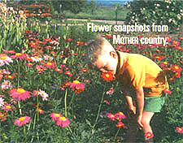
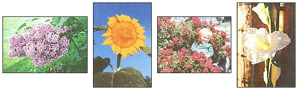

First there was a trickle, followed by a flood. The response to our invitation for MOTHER readers to join the Photo Club has been overwhelming. So many of you chose to send us your late-season flower photos that we couldn't resist brightening the winter season pages with them. It's hard not to smell those lilacs, white gladiola, coneflowers, and morning glories from here. If you haven't clicked your camera for us yet, send those works of art to: MOTHER's Photo Club, attn.: Jamey O'Quinn, Mother Earth News, P.O. Box 129, Arden, NC 28704. If we print your photo, we'll send you $50, plus a six-times-yearly newsletter featuring hints from our photo department and news from the club.
U.S. farmers plant nearly four million acres of sunflowers each year, which produce over two million tons of seeds. It is not uncommon for stalks to grow twenty feet tall or more!
The lilac's purple flowers are said to represent the earliest emotions of love. Lilac seed requires a one-month cold period before planting.
|
 Vicky Koch, Wynot, Nebraska Tim stops to smell the flowers |
 From left: Lilac by Judy Hillman, Kingsport, Tennessee. Giant sunflower, by Joni Solis, Kentwood, Louisiana. Joshua Cowan is surrounded. Photo by Lona Cowan, Ft. Lupton, Colorado. White gladiolus against a fence, by Karen Marie Brown, Bend, Oregon. |
|